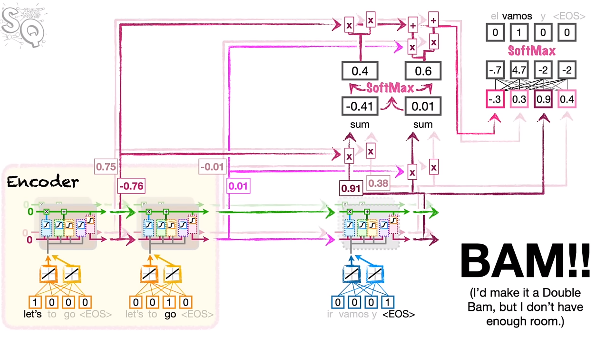

9 Attention for Neural Networks
These notes are based on Josh Starmer’s video Attention for Neural Networks, Clearly Explained!!!
Issues with the basic encoder-decoder architecture
When we unroll the LSTMs in the encoder-decoder architecture, we end up compressing the entire input sentence into a single context vector. This is ok for short phrases, but for bigger input vocabularies this might not work. For example, words which come earlier on may be forgotten. For example, this would be a big issue if the first word at the beginning of “Don’t eat the pizza while petting the cat”.
The Novelty of Attention
Instead of having information forgotten by the LSTMs, new paths are created from older units (further towards the front) directly to the decoder so they can serve as inputs. However, adding these extra paths is not a simple process. This style of model is consistent for all encoder-decoder models with attention.
The Process of Attention

- attention determines how similar the outputs from the encoder LSTMs are at each step. (a similarity score between LSTM outputs and the firs tstep of the decoder)
- There are many ways to determine the similarity of two word embeddings
- cosine-similarity: \text{cosine similarity } = \frac{\sum_{i=1}^{n}A_{i}B_{i}}{\sqrt{\sum_{i=1}^{n}A_{i}^{2}}\sqrt{\sqrt{\sum_{i=1}^{n}B_{i}^{2}}}}
- the numerator calculates the similarity between two sequences of numbers
- the denominator scales the value to between 0 and 1.
- alternatively, the numerator can be used alone - the scaling may or may not be necessary in all cases. This numerator is simply referred to as the dot product. this metric is more common because it is
- cosine-similarity: \text{cosine similarity } = \frac{\sum_{i=1}^{n}A_{i}B_{i}}{\sqrt{\sum_{i=1}^{n}A_{i}^{2}}\sqrt{\sqrt{\sum_{i=1}^{n}B_{i}^{2}}}}
- If the score for one word is higher, we want that word to have more influence on the first word that comes out of the decoder.
- scores are run through the softmax function, and the output determines the percentage of the decoding accounted for by each of the input words. This output is run through a fully connected layer and softmax is used to determine the resulting word.
Just like with encoder-decoder networks, you keep using the next word, unrolling the network, if the predicted word is not <EOS>
However, now that attention has been added to the model, it actually turns out that the LSTM modules are not necessary.